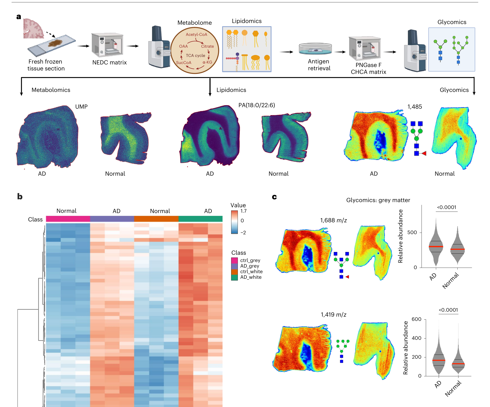
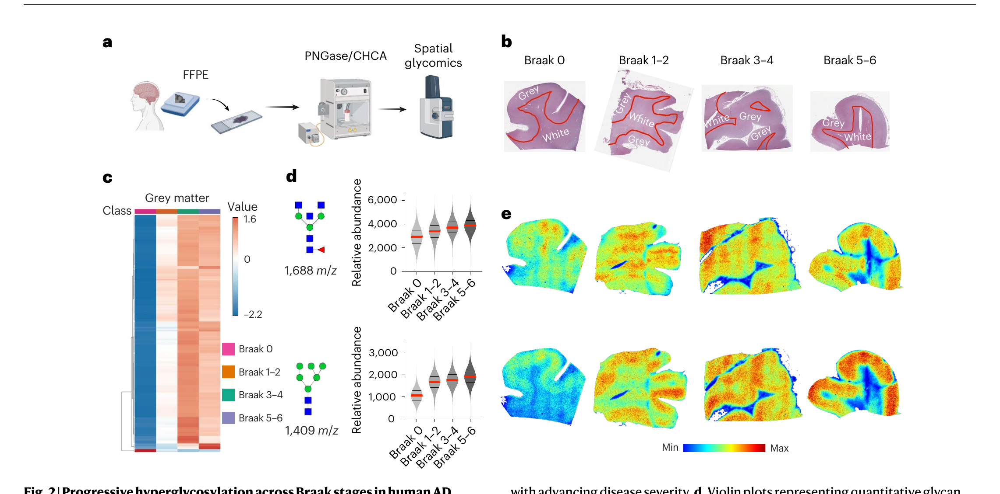
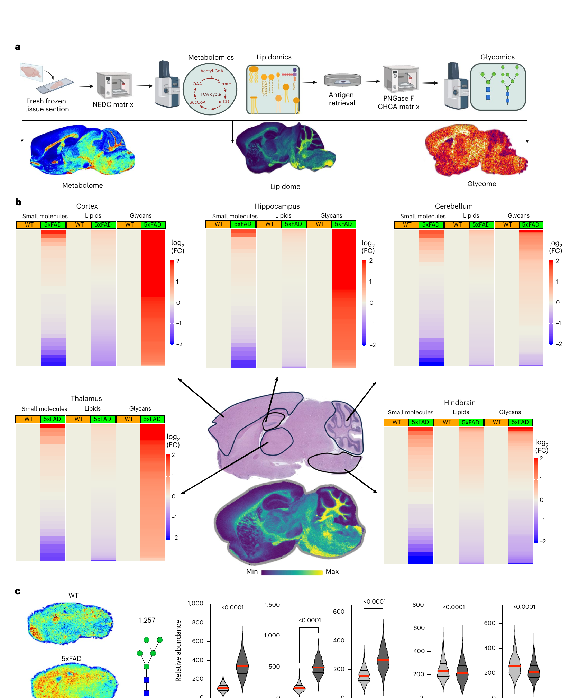
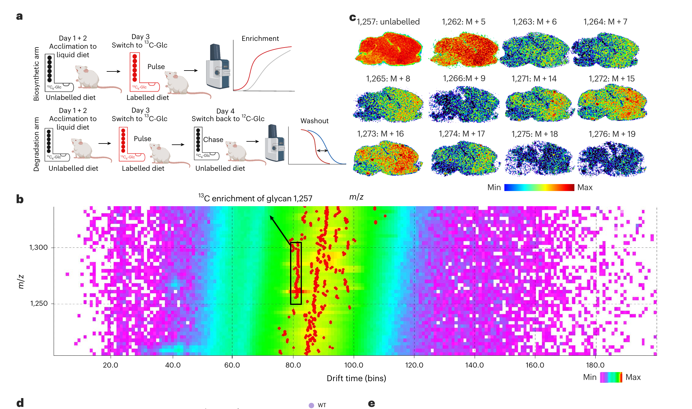
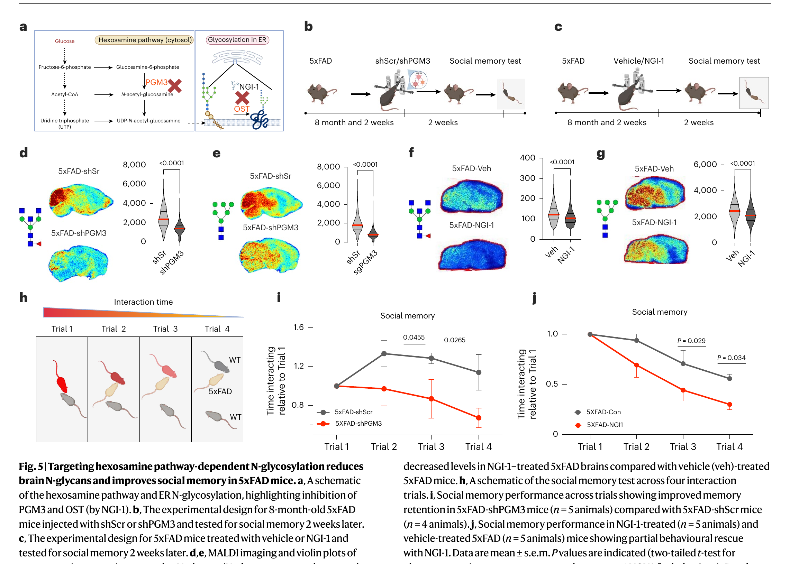
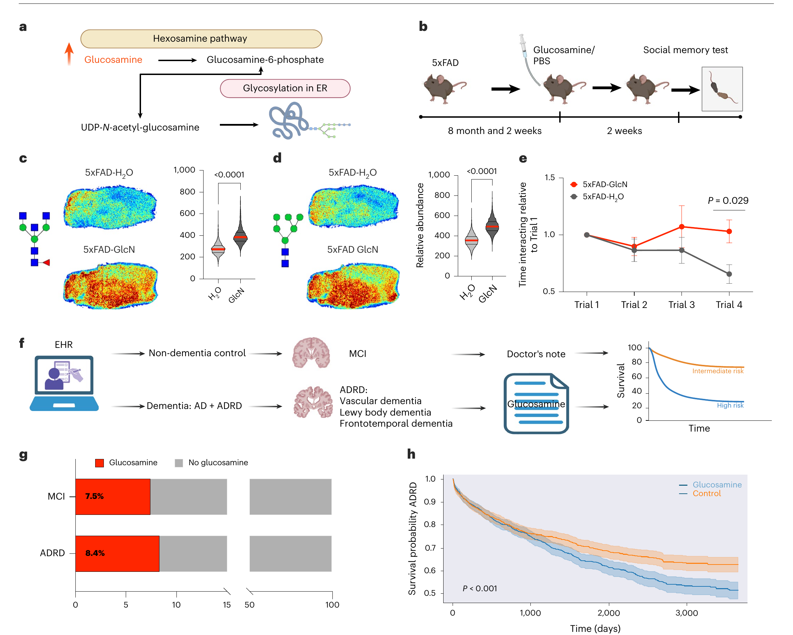

糖鎖の「付きすぎ」が病気を駆動する／グルコサミンは安全か
AD脳のN型糖鎖は生合成の亢進で過剰になり、操作すると記憶が双方向に動く＝病態のドライバー。関節サプリのグルコサミンは悪化と関連（ただし健常では無害・人では関連どまり）。
| 軸 | 基礎科学（マウス・ヒト脳） | EHR（ヒト集団） |
|---|---|---|
| P | 5xFAD・PS19、剖検AD皮質（各3例＋Braak層別） | MCI 41,884人 / ADRD 24,481人 |
| 曝露 | shPGM3・NGI-1（減らす）／グルコサミン（増やす） | グルコサミン使用 |
| C | 対照ベクター／健常WTマウス | 非使用者（傾向スコアマッチ） |
| O | 脳N型糖鎖・社会記憶・Aβ/タウ | 10年死亡・MCI→ADRD移行 |
MALDI-MSI（質量分析イメージング）で、メタボローム→リピドーム→グライコームを順に取得し「どこに何があるか」を地図化。ヒト脳はキシレン洗浄で糖鎖検出感度を10〜20倍に改善。
13C標識グルコース食で、糖鎖が「新しく作られた（生合成）」のか「壊れにくいだけ（分解低下）」のかを区別。これが機序解明の決め手になる。
年齢・性・剖検後経過を揃えたAD3例 vs 対照3例の前頭皮質（Fig 1）。二分岐型（1,688 m/z）・ハイマンノース型（1,419 m/z）の糖鎖が増加（P<0.0001）。
糖鎖は増えるのに、その遊離前駆体（アセチルグルコサミン・グルコサミン-6-リン酸）はADで減少（P<0.0001）＝材料が消費される＝後の「生合成の亢進」へつながる伏線。※基盤標本はAD3例と少数。

※灰白質糖鎖（1,688 / 1,409 m/z）の進行性増加を模式化（Fig 2c,d）。白質は Braak 1–2 で早期上昇するが後期は非進行性。横断デザインのため因果方向はこの図単独では決まらない。


5xFAD > WT で標識糖鎖が有意に増加。
新規合成が速い
24時間後の消失はWTと差なし。
分解・代謝回転に差なし
分解低下ではなく生合成の亢進が主因。治療標的は合成酵素（PGM3・OST）に定まる。

n=5・社会記憶のみ。陰性所見は検出力不足でも生じうる。

5xFAD：グルコサミン 457 mg/kg/日（≒ヒト 2,500 mg/日）×2週間 → 糖鎖↑・社会記憶悪化（Trial 4 P=0.029）
健常WT：同用量でも糖鎖は増えず、記憶も悪化せず ＝ 害はAD的代謝状態に依存（健常脳には緩衝機構）
グルコサミン使用で10年全死亡が上昇（P=0.0023）。使用率 8.4%。
log-rank P=0.252。使用率 7.8%。疾患のない集団では死亡差を認めず。
グルコサミン使用群で移行が増加（P<0.001）。

| 論点 | 内容 |
|---|---|
| 観察研究 | EHRは因果でない。適応による交絡・残存交絡（APOE/併存/他サプリ未調整） |
| 曝露測定 | 使用を医師記録の正規表現で同定＝記載漏れ・用量/期間/品質不明 |
| MCIの解釈 | 死亡差なし×移行のみ増 → 検出力不足 or サーベイランスバイアスの可能性 |
| マウス | 用量換算・2週間の短期・社会記憶という単一指標・n=5〜7 |
| 標本数 | ヒト空間オミクスはAD各3例・単施設米国＝他人種は未検証 |
AD脳は糖鎖が付きすぎ。分解低下ではなく作りすぎ（13Cパルスチェイスで切り分け）。
糖鎖を減らせば記憶改善、グルコサミンで悪化。ただし害はAD的代謝状態に依存する。
EHRでADRD死亡25%増・MCI→AD移行25%増。観察研究＝因果は未確定、RCTが必要。
Hawkinson TR, Liu Z, Ribas RA, et al. Hyperglycosylation is a metabolic driver of Alzheimer's disease. Nat Metab. 2026.
DOI 10.1038/s42255-026-01538-4 ／ PMID 42265388 ／ 責任著者 Ramon C. Sun（U. Florida）
補助線：Minhas PS, et al. Science 2024;385:eabm6131.